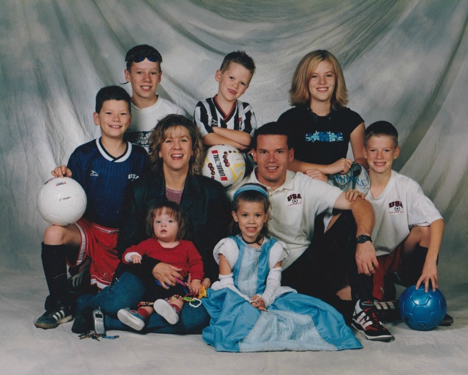

Hi, I’m Paul Nestman. Thanks for taking a look at my resume. Hopefully you like what you see and want to learn more about my background and experience. I believe that my broad background puts me in a great position to be able to help a lot of different companies grow, become more efficient, successful, and profitable.
So, you’ve looked at my resume and you’re probably thinking, “Yeah, this guy looks like he’d be great fit for our organization, but I wonder what he’s like away from work. What are his interests? Does he have a wife and family?”
Those are great questions. Continue reading, and I’ll do my best to answer your questions.
The first thing you should know about me is that I’m a big soccer and RSL fan. I grew up a University of Utah fan, but I ended up going to BYU. I played four years of Division I soccer at BYU. Sadly, the BYU men’s soccer team became a casualty of Title 9, but I thoroughly enjoyed playing soccer for a lot of years. Eventually I started coaching my kids in soccer, and I was able to coach a lot of my kids’ teams for a lot of years, which was awesome!
Much to my chagrin, my oldest daughter stopped playing soccer and started swimming competitively. After some time, she converted most of her other siblings to become swimmers as well. I quickly became a swimming fan and wished I had joined the movement earlier.
I have been doing my best to learn how to be a better swimmer over the last several years as I’m now a want-to-be triathlete. Swimming continues to be my weakest discipline, but I think I’m slowly getting better…emphasis on slowly.
I really enjoy cycling and believe that is my strongest discipline in a triathlon. It’s probably because I’m not a very good swimmer yet, so I feel like I need to make up ground once I transition from the swim to the bike. I just bought a new-to-me bike this year and I love my new ride. It’s definitely an upgrade from my previous bike, plus it has that “cool” factor.
As far as running is concerned, I’m definitely a sprinter, but I’ve learned to enjoy running longer distances. I’ve completed a couple of marathons, but I tore my ACL skiing and the doctor told me that I could still run, but to keep it to 2-3 miles a couple of times a week because he had to remove most of the meniscus in the knee that was operated on. So I stopped running for several years, but have since started back up. No more marathons, but I have completed a couple of half-marathons, 10Ks, as well as multiple triathlons. Hopefully my doctor doesn’t read this.
I also enjoy golfing despite it being very frustrating. If I only had more time and talent. I’d like to show you a clip of me making a long birdie putt, but I’m afraid it would require too many takes.
One of my favorite things to do is snow skiing with my family, especially powder. Hopefully you saw the clip of me skiing this past winter. Too bad it wasn’t a powder day!
Being the father of four sons I’ve spent a lot of time volunteering for the Boy Scouts of America, and I’m currently a merit badge counselor for multiple merit badges. I’m also an active member in the church I belong to, and spend many hours volunteering there.
My absolute favorite thing to do is spend time with my wife and family. My wife and I enjoy going to movies, watching Netflix, going on walks, and riding our bikes together. I’m trying to get her to do a triathlon with me, but no luck yet…at least not recently. However, I’m still optimistic that it will happen.
There you have it, a brief glimpse into the things I like to do. As you have probably gathered, I do have a wife and family. I have 7 children (girl, four boys, and two girls), which is more than I anticipated, but it’s been wonderful, and I wouldn’t change a thing. My wife and family are certainly my greatest blessings in life, and they are my motivation for being an outstanding employee.
Thanks for checking this out and I hope to be speaking with you in person real soon!